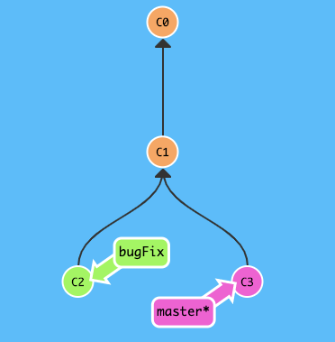
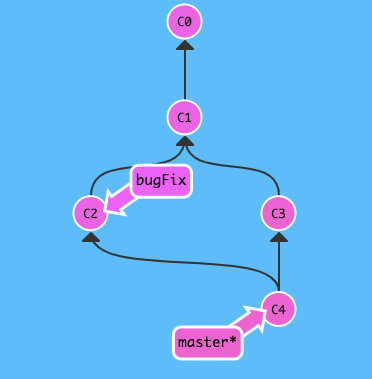
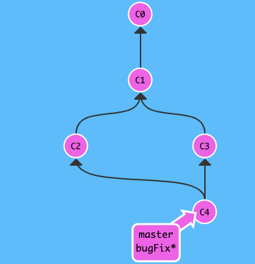

Merging ist in Git der Weg, der für das Zusammenführen von einzelnen Abzweigungen zuständig ist. Mit dem Befehl git merge können unterschiedliche Projektstände, die sich möglicherweise in erfolgten Änderungen überschneiden, ordentlich in den aktiven Branch zurück integriert werden Am einfachsten funktioniert der git merge, wenn sich die Änderungen der verschiedenen Entwicklungszweige nicht überschneiden. Sollte das Gegenteil der Fall sein, wird der aktuelle Entwicklungsstand des Hauptbranches in den zu mergenden Branch überführt. Anschließend erfolgt mit einer Git-Commit-Message die Verschmelzung der beiden Zweige ineinander.
Zuerst fügt man einen Master-Zweig mit den Befehlen git checkout und git merge in den ausgewählten Zweig ein. Jetzt wird ein neuer Merge-Commit im ausgewählten Zweig erstellt, der die Historie beider Zweige beinhaltet.
Wir wollen bugFix (C2) mit dem master (C4) zusammenführen:
1. Schritt: Den Branch bugFix in Master integrieren mit git merge bugFix
2. Schritt: den Zweig bugFix anwählen mit git checkout bugFix
3. Schritt: bugFix und Master zusammenführen mit git merge master
